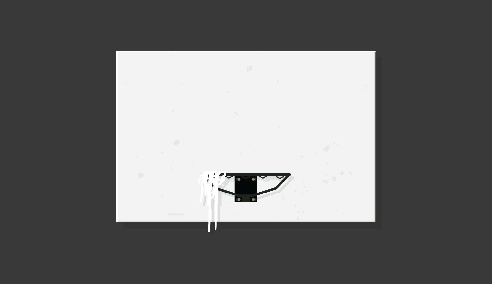
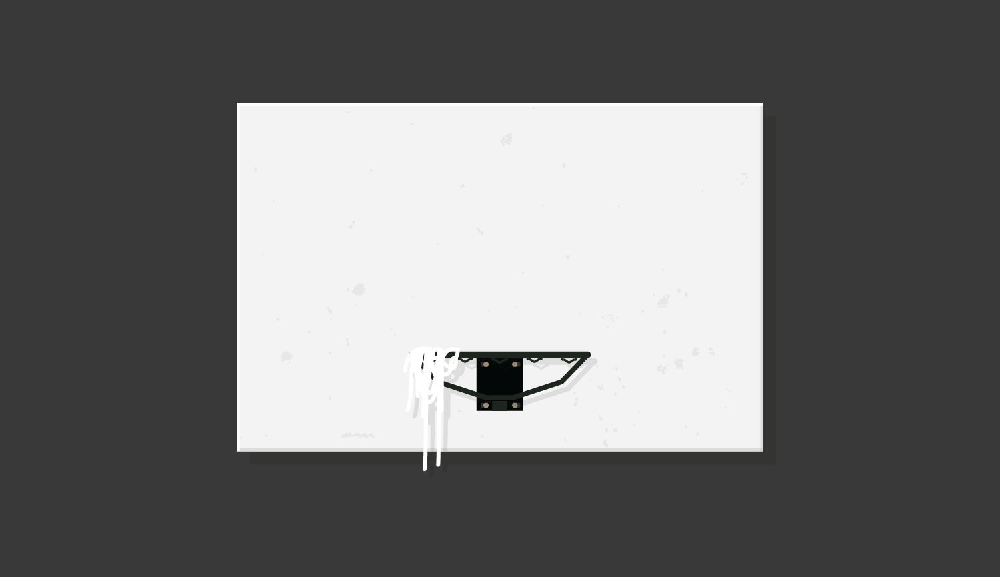
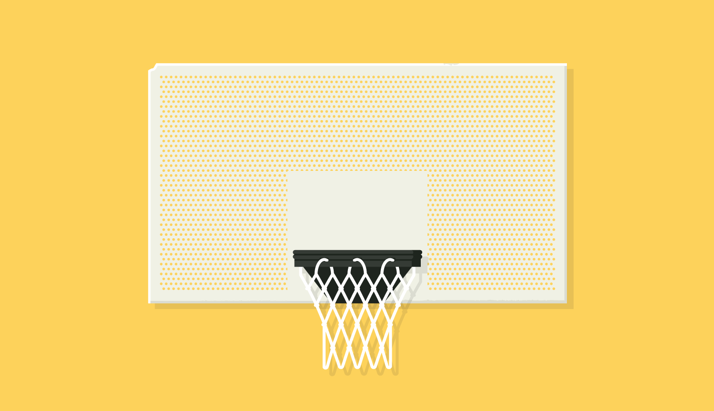
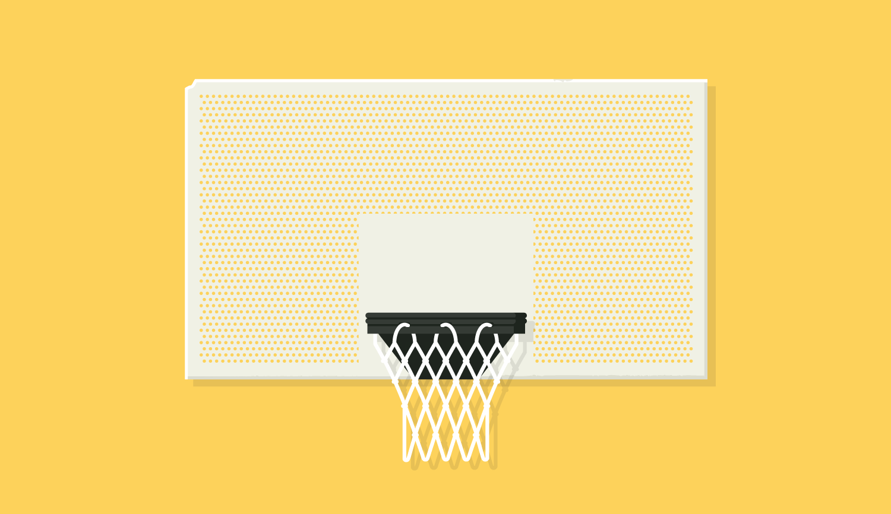

 


 



Hoops Origin Story
The hoops project grew out of my first experience playing basketball in the spring of 2013. As a newcomer I wanted to find new hoops in the city, document the places to ball and share that information with the community, especially the other newcomers. Y'all can catch new hoops being added once-a-week and new features being added over time. Eventually I'd love to see this project extend beyond the city of Boston. Please get in touch if you'd like to rep your city!
John Boilard is a person from Boston, MA who designs for print and the web. He is a basketball enthusiast who's pretty good on defense (still working on that jump shot) and the producer of a traveling poster show called The National Poster Retrospecticus.